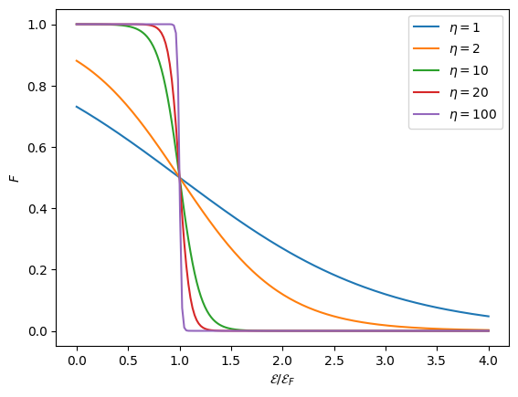
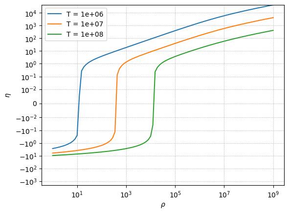
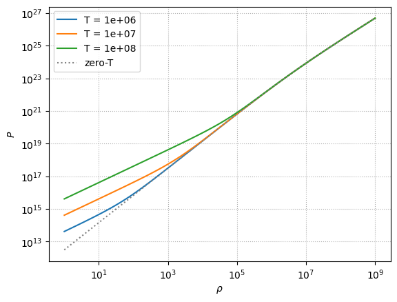

Degeneracy and White Dwarfs#
Distribution function#
The distribution function describes the properties of the electrons, and has the following meaning: \(n(p) d^3 x d^3 p\) is the number of particles with momentum \(p\) in a volume \(d^3x\). Our distribution function is:
where \(\mathcal{E}\) is the kinetic energy of the electron, \(T\) is the temperature, and \(\eta\) is the degeneracy parameter which is related to the chemical potential, \(\mu\), and the Fermi energy, \(\mathcal{E}_F\), as:
Note
At low density and high-temperature, electron-positron pairs can be produced, and we would need to consider the positron contribution to the EOS. For the conditions we will be looking at in the white dwarf interior, these will not be important.
Degeneracy#
The electrons are degenerate when \(\eta \gg 1\), which means that the Fermi energy is much greater than the thermal energy. The electrons behave as an ideal gas when \(-\eta \gg 1\) (in this case, the \(+1\) in the denominator of \(n(p)\) is insignificant and we get the Maxwell-Boltzmann distribution).
To get the number density, we integrate over all momenta:
The pressure and specific internal energy, \(e\), are then found as:
Transition to degeneracy#
Let’s look at the behavior of the distribution function. Consider:
let’s define
then we have
and for each choice of \(\eta\) we have a unique distribution.
We note that \(\xi/\eta = \mathcal{E}/\mathcal{E}_F\).
import numpy as np
import matplotlib.pyplot as plt
def F(xi, eta=100):
return 1.0 / (np.exp(xi - eta) + 1)
Let’s look at the case of \(\eta > 1\)
fig, ax = plt.subplots()
# we'll work in terms of r = xi / eta
r = np.linspace(0, 4, 200)
for eta in [1, 2, 10, 20, 100]:
ax.plot(r, F(eta * r, eta=eta), label=fr"$\eta = {eta}$")
ax.legend()
ax.set_ylabel("$F$")
ax.set_xlabel(r"$\mathcal{E}/\mathcal{E}_F$")
Text(0.5, 0, '$\\mathcal{E}/\\mathcal{E}_F$')

As we see, as \(\eta \rightarrow \infty\), the distribution, \(F(\mathcal{E})\) becomes a step function. This is the limit of complete degeneracy, and we have:
We can alternately use the Fermi momentum, \(p_F\) to describe the location of the step.
With this form, the integral for number density is trivial:
where we switched to spherical coordinates in momentum space: \(d^3p \rightarrow 4\pi p^2 dp\).
Computing \(\eta\)#
For other values of \(\eta\), we have a problem:
We don’t know what the value of \(\eta\) is ahead of time. Instead, we typically know what the density of the star is, and we can find the number density of electrons as:
where \(Y_e\) is the electron fraction (typically around \(1/2\) for compositions heavier than hydrogen). This means that given \(\rho, T\), we can solve for \(\eta\).
The kinetic energy of a particle can be found from the relativisitic expression:
Note
This has the proper limit in the non-relativistic case, \(|p| \ll m_e c\):
Once we have \(\eta\), we can then find the pressure and energy of the gas.
Finding the trend of \(\eta\) with \(\rho, T\)#
import pynucastro as pyna
eos = pyna.eos.ElectronEOS()
import numpy as np
comp = pyna.Composition(["o16", "ne20"])
comp.set_equal()
We’ll store \(\eta\) and \(P\) for a range of densities at a few different temperatures.
rhos = np.logspace(0, 9, 100)
etas = {}
ps = {}
for T in [1.e6, 1.e7, 1.e8]:
etas[T] = []
ps[T] = []
for rho in rhos:
# by default, this gives both the electron and
# positron contributions. We'll ignore the positrons
ee, _ = eos.pe_state(rho, T, comp)
etas[T].append(ee.eta)
ps[T].append(ee.p)
Let’s visualize \(\eta\)
fig, ax = plt.subplots()
for T in etas:
ax.plot(rhos, etas[T], label=f"T = {T:5.2g}")
ax.set_xlabel(r"$\rho$")
ax.set_ylabel(r"$\eta$")
ax.set_xscale("log")
ax.set_yscale("symlog", linthresh=1.e-2)
ax.legend()
ax.grid(ls=":")

Pressure at zero-T#
At zero-temperature, the distribution function is a step function, and then integrals become straightforward.
The number density is just:
or, the Fermi momentum is:
For the pressure, we need \(v(p)\), which from mechanics is:
and taking \(T \rightarrow 0\), our pressure integral becomes:
Performing this integral, we find:
where \(x\) is the dimensionless Fermi energy:
Exploring the transition to degeneracy#
We can compare the exact expression to this zero-T expression to see when the transition to degeneracy occurs.
m_u = pyna.constants.constants.m_u
h_planck = pyna.constants.constants.h
c = pyna.constants.constants.c_light
m_e = pyna.constants.constants.m_e
def p_zero_temp(rho, Ye=0.5):
# find number density
n_e = rho * Ye / m_u
# find Fermi momentum
x_F = (3 / (8 * np.pi))**(1/3) * (h_planck / (m_e * c)) * n_e**(1/3)
P = (np.pi/3) * (m_e * c / h_planck)**3 * m_e * c**2 * (x_F * (2*x_F**2 - 3) *
np.sqrt(1 + x_F**2) + 3 *
np.arcsinh(x_F))
return P
fig, ax = plt.subplots()
for T in ps:
ax.loglog(rhos, ps[T], label=f"T = {T:5.2g}")
ax.loglog(rhos, p_zero_temp(rhos), linestyle=":", color="0.5", label="zero-T")
ax.set_xlabel(r"$\rho$")
ax.set_ylabel(r"$P$")
ax.grid(ls=":")
ax.legend()
<matplotlib.legend.Legend at 0x7ff12be3b380>

We see that at high density, the pressure matches the zero-T approximation well. At lower densities, the electrons break from the zero-T curve and act as an ideal gas.